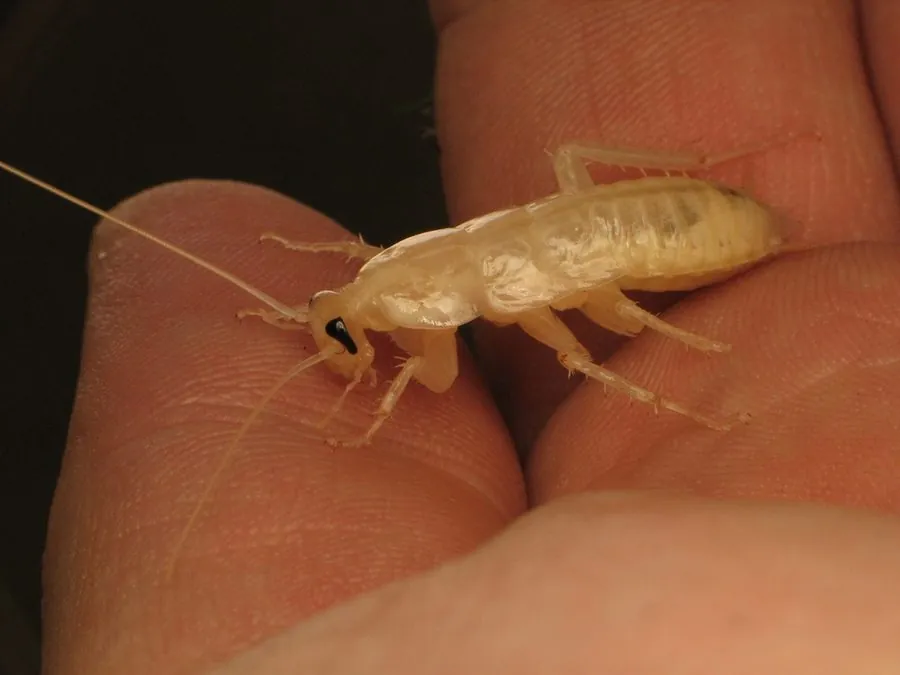

昆虫 · 动物界
美洲大蠊 Periplaneta americana

体型较大的常见蟑螂，夜间出没、食性庞杂，是城市重要的卫生害虫，其分泌物也是常见的过敏原之一。
- 分类
- 门节肢动物门纲昆虫纲目蜚蠊目科蜚蠊科属大蠊属
- 栖息环境
- 温暖潮湿的室内、下水道、厨房与垃圾堆
- 地理分布
- 全球温暖地区，原产非洲，随航运扩散
- 保护级别
- 暂无评估
物种志
美洲大蠊成虫体长 3–4 cm，体红褐色，前胸背板边缘浅色，中央有两个深色斑，体扁平，触角细长，足上带刺，翅发达，能做短距离滑翔飞行。雌雄外形相近，雌虫腹部较宽。
它夜行性，白天藏在厨房缝隙、下水道和杂物堆中，夜间出来觅食，食性庞杂，取食食物残渣、纸张、皮革和有机物。雌虫每 1–2 周产一枚卵鞘，每枚含 14–16 粒卵，卵鞘约 1 个月后孵化，成虫寿命约 6–12 个月。美洲大蠊污染食物、携带多种病菌，其分泌物和蜕皮可诱发过敏和哮喘。它原产非洲，随航海贸易扩散到全球温暖地区。值得一提的是，其提取物是中药康复新液的原料之一；防治以环境治理、胶饵和滞留喷洒为主。
形态与习性
- 食性杂食，取食食物残渣、纸张、皮革和有机物
- 体长约 3–4 cm
- 繁殖雌虫每 1–2 周产一枚卵鞘，每枚含 14–16 粒卵
- 寿命成虫可活约 6–12 个月
- 危害污染食物、携带病菌，分泌物可诱发过敏和哮喘
- 药用其提取物被用于创面修复的中药制剂
趣味知识
- 美洲大蠊原产非洲，随大航海时代的船只扩散到美洲和全球。
- 美洲大蠊的提取物是中药康复新液的原料之一。
- 蟑螂失去头部后仍能存活数天，因为它不靠头部控制呼吸。